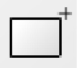
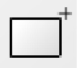

General
Viewing Requirements
- This site works in most common browsers including Firefox, Internet Explorer and Safari. Older browser versions may show errors.
- JavaScript must be enabled in your browser.
- Flash Player 7 or later is required. Download the Flash Player.
Navigating the Site
Books can be selected by:- Repository - the name of the library or museum where the book is now held
- Common name - a shorthand name for the book
- Current location - the city where the book is now held
- Date - the date by century when the book was produced
- Origin - the location by city or country where the book was produced
- Type - the type of codex, either a manuscript or printed book
- Number of Illustrations - the total number of illustrations in the book
- Number of Folios - the number of folios in the book
- Transcription - a copy of the text as it appears in a particular manuscript
- Page turner - Flash animation enables you to move forward and backward through the book. A drop-down menu, located above the viewport, gives several options for examining folios. (No drop-down menu will appear if there is no metadata for that particular manuscript.)
- Show: to view just the image
- Illustration description: to see illustration titles and keywords in a box to the right of the viewport, when available
- Transcription: to read a transcription, when available. Click on the tabs at the top of the box for the next column of text on the folio
- Transcription [Lecoy]: to read a transcription with line numbers (from the Lecoy edition).
- Narrative sections: to see the narrative section/s of displayed folios. The box to the right of the viewport gives the narrative section id in bold (with a question mark when this was generated by an algorithm and so only approximates the start), and the Lecoy line number which begins the section (in purple). For some manuscripts, the actual line beginning the section from Selden Supra 57 (here SS57) is also given.
- Browse images - Thumbnail view of all the images in the book
Changing the amount of viewing space
- Click on the Smaller button above the viewport to decrease the size of the viewing area.
- Click on the Larger button above the viewport to increase the size of the viewing area.
- Select the Popup button above the viewport to open the image in a new window without the top or left navigation buttons.
Getting a closer look at a folio
- There are several ways to zoom in on an image. In Browse images, clicking on the image zooms in on it. In Page turner, the first click on an image allows you to select one of the two folios shown. Subsequent clicks will zoom in on this folio only.
- Another way to zoom in is to click on the "Zoom In" button .
- To return to the default zooming mode after using the "Drag Image" button
 or the "Tilt Image" button
or the "Tilt Image" button  , click on the "Zoom Selection" button
, click on the "Zoom Selection" button  .
.
Moving around an image
- After zooming in on an area of a folio image, there are two ways to move to another area of the same folio. One way is to click on the "Drag Image" button and then click on the folio and drag the cursor to the area.
- Another way to move to another area of an image is to click on the red outline in the survey window
 and move the cursor to the area.
and move the cursor to the area.
Getting a full view of the folio
- Click on the "Zoom Out" button to zoom out incrementally.
- Click on the "Reset Image" button
 to return to the original view.
to return to the original view.
Rotating an image
- Click on the "Tilt Image" button to use the tilt function. Then click anywhere on the image and drag the cursor to rotate it.
Comparing two folios
Both Page turner and Browse images have a Popup button that will open the book in a separate window. Use the Popup button to look at two images at once
In Page turner:
- To find the first image: select a book, click on Page turner, and enter the folio number in the box above the viewport.
- Click on the Popup button above the viewport. A new window with this folio will open.
- Go back to the viewport.
- Find the second image by selecting a book, clicking on Page turner, and entering the folio number in the box above the viewport or paging through to the folio.
- Click on the Popup button above the viewport. A new window with this folio will open.
- You can resize and move both the windows.
In Browse images:
- To find the first image: select a book, click on Browse images, browse thumbnail images to find a folio.
- Select a thumbnail image.
- Click on the Popup button above the vieweport. A new window with this folio will open.
- Go back to the viewport.
- Find the second image by selecting a book, clicking on Browse images, and browsing thumbnail images to find a folio.
- Select a thumbnail image.
- Click on the Popup button above the viewport. A new window with this folio will open.
- Resize and move the two windows if desired.
Basic Search Tips
- A basic search consists of entering a set of terms. A term can be either a phrase or a word. Phrases must be enclosed in double quotes.
- A proximity search is done by adding the optional '~NUMBER' suffix to a phrase. This sets a requirement that words in the phrase be within NUMBER words of each other.
- Boolean operators '+', (must be present), and '-', (must not be present), are used by starting a term with them.
- Single word terms have additional search options. The '~' suffix specifies fuzzy matching. The '*' character matches multiple characters. The '?' character matches any single character.
- If a word or phrase is not Boolean, does not use wildcards, and does not do fuzzy matching:
- Words that match French character names also match variants of the character name
- When searching Old French, words also match Old French spelling variants
- Results are ordered by relevance, and the option to perform an advanced search is presented.
Advanced Search
- You can search across books and narrow your search by:
- choosing which field(s) to include in the query by using the "Add Field" button.
- choosing which books are searched
- Refer to the glossary below for a definition of terms found in the Advanced Search tool.
The Bookmark tool is used by clicking the "Notepad" button on the bottom menu of the viewer.
If you are in Page turner, the "Notepad" button is at the far left of the menu bar.
If you are in Browse images, the "Notepad" button is at the far right of the menu bar.
Creating a bookmark
While viewing the folio to be bookmarked, click the "Notepad" button that pops up, click on the first button in the left corner . This creates a bookmark that can be returned to for the duration of the viewing session.
that pops up, click on the first button in the left corner . This creates a bookmark that can be returned to for the duration of the viewing session.
Click the "Close" button
Bookmarking a custom area
While viewing the folio you want bookmarked, click the "Notepad" buttonClick on the area next to the thumbnail image to write a brief comment about the bookmarked folio (this is optional). Click the "Close" button
Referring to a bookmark
Select the book. Select Page turner or Browse images. Click on the "Notepad" buttonDeleting a bookmark
Click on the "Notepad" buttonThe following is a glossary of terms that you may encounter while using this site. A more extensive glossary of medieval terms can be found in the Catalogue of Illuminated Manuscripts at the British Library and Michelle Brown's Understanding Illuminated Manuscripts: A Guide to Technical Terms (J. Paul Getty Museum: Malibu and British Library: London, 1994).
- Codex
- (pl. codices); a book composed of folded sheets of parchment or paper sewn together. This term is used to describe manuscripts, incunabula and printed books.
- Critical note
- a scholarly remark added by the transcriber noting an idiosyncrasy of the text being transcribed
- Codicological description
- a physical description of the codex in its present condition
- Folio
- (pl. folia or folios); an individual leaf of a manuscript. Manuscripts are numbered by folios as opposed to pages. Each leaf is identified by one number, and the front and the back of the leaf are distinguished by the terms “recto” for the front of the leaf, and “verso” for the back.
- Illustration
- a drawn, painted, or woodcut scene in a codex. Illustrations can be searched on this site by illustration title, by character depicted, or by costume, objects in the scene, landscape and architecture.
- Incunabule
- a term for printed books produced before 1501.
- Lecoy
- a line numbering convention that follows Felix Lecoy’s edition of the Rose text
- Nota
- a brief record or jotting of some kind added to the manuscript
- Quire
- sheets of paper or parchment folded to form a booklet of leaves, and sewn together to form a codex
- Repository
- a museum, library, or other storage space for collecting, preserving and disseminating data
- Rubric
- a direction or description that is not part of the text, but is included in the manuscript as a guide for the reader. Rubrics are usually written in red ink. The term is derived from rubrica, the Latin word for red.
- Shelfmark
- a unique number assigned to each codex in a repository, indicating its exact physical location. A shelfmark consists of a combination of letters, numbers, or names usually indicating the physical location of a codex within a particular fonds, room, bookcase, or press and its position relative to other items on the same shelf or within the sequence of a collection.